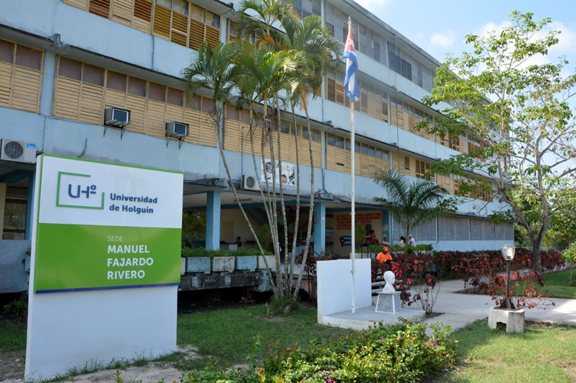

<!--

<mat-card class="study-card" id="caja1">


  <mat-card-title-group>
    <mat-card-title>Estudios</mat-card-title>
    <mat-card-subtitle>Universidad de Holguín</mat-card-subtitle>

  </mat-card-title-group>

  <mat-card-content>
    <mat-grid-list cols="2" rowHeight="5:2">
      <mat-grid-tile [colspan]="1.9">
        <p id="text-card-study">
          Comienzo la carrera universitaria en la Universidad de Holguín en Septiembre del año 2014, en la
          especiaidad de
          Ingeniería Informática culminada el 13 de junio del 2019.
        </p>
      </mat-grid-tile>
      <mat-grid-tile id="tile-imagen" [colspan]="0.1">
        
      </mat-grid-tile>
    </mat-grid-list>
  </mat-card-content>

  <mat-card-actions>
    <a href="https://www.uho.edu.cu" type="button" mat-button>
      Ver Escuela
    </a>
  </mat-card-actions>
</mat-card>
-->

